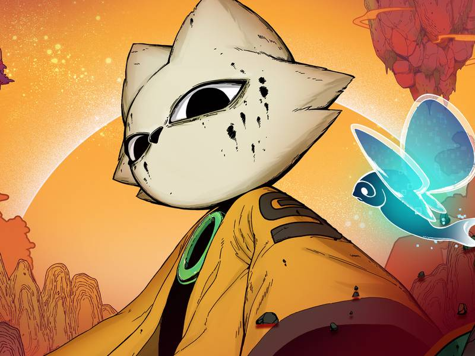
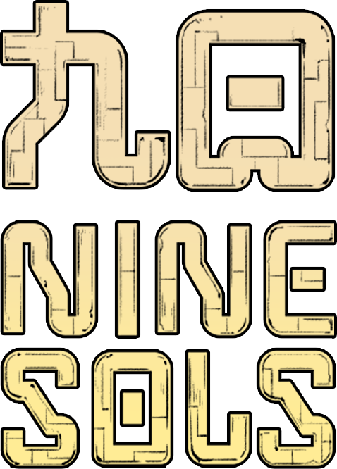
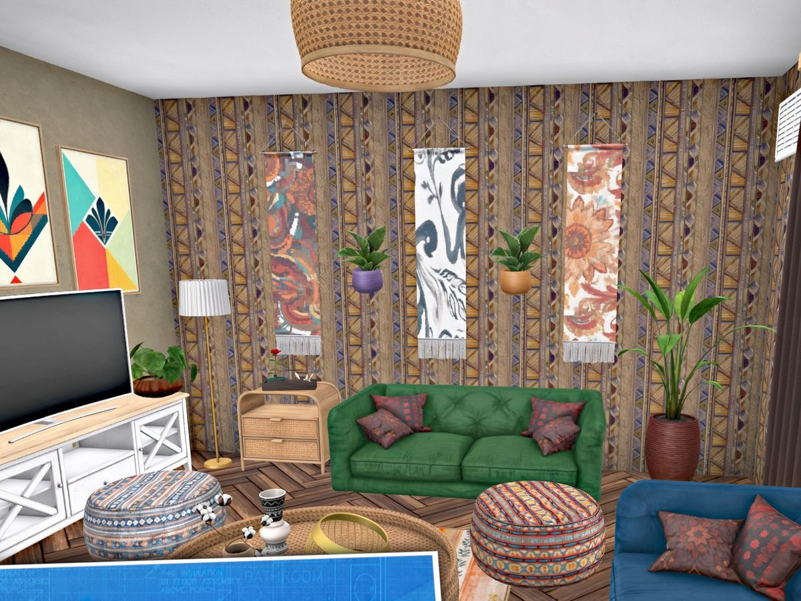
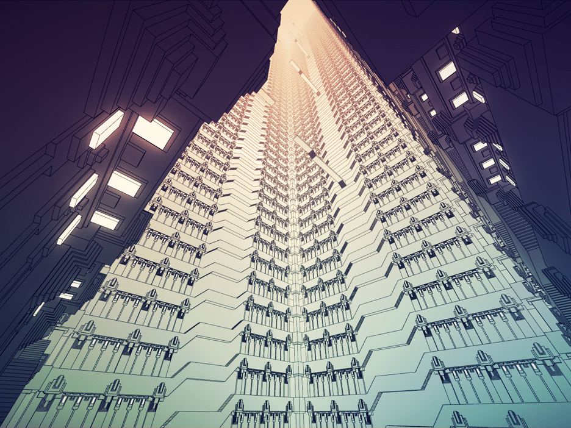
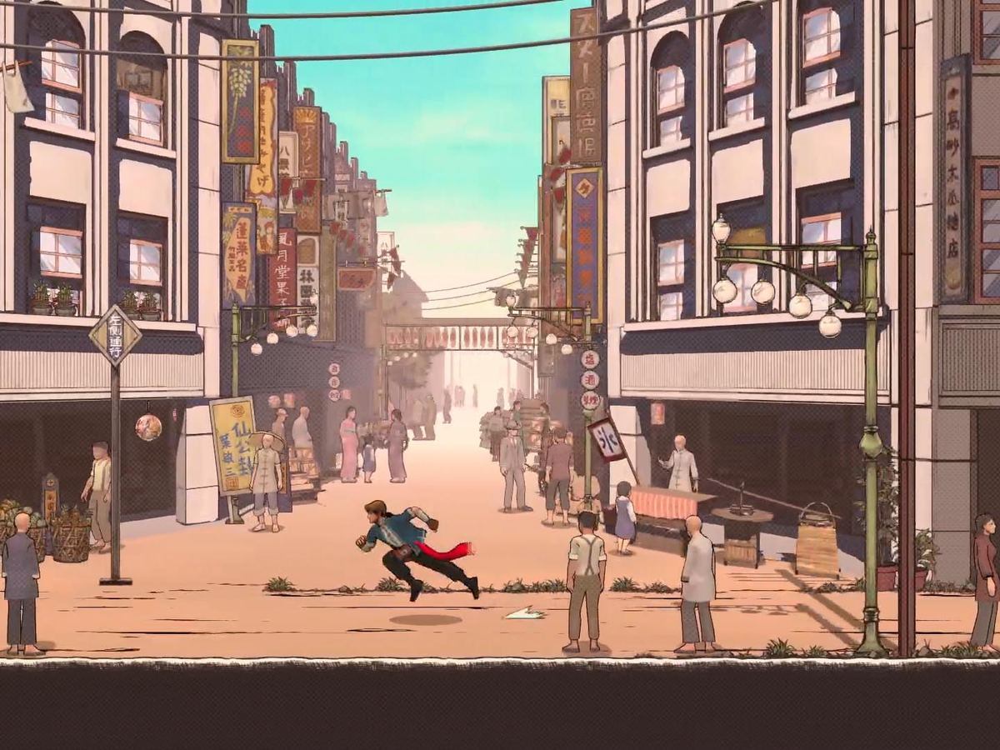
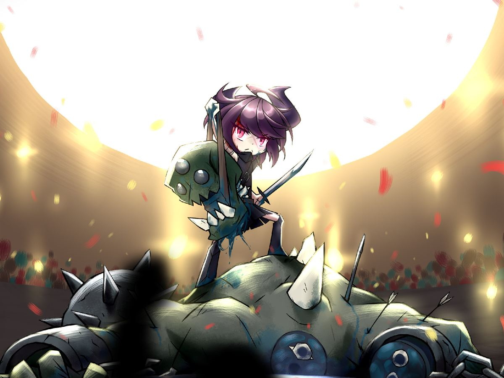

九日 Nine Sols
手繪風格的道朋克復仇故事。在崩壞的賽博龐克世界裡，彈反、反擊，扳倒龐然巨大的首領。
- 服務項目
- 英文在地化與遊戲內測試。中翻英。
- 玩家評價
- 4.4 萬+ · 極度好評

以下任兩種語言之間，都能互相翻譯。
來源語言可為上列任一種。
五個步驟，三種起點。你進行到哪，就從哪裡開始。
如果你想為現有譯文找個第二意見，或想聽聽劇本該怎麼在地化（即使還沒寫完），就從這裡開始。
我們檢視你手上的內容與想達成的目標，再為你規劃一份量身打造的路線圖。
涵蓋步驟 1。如果你手上有劇本，需要翻成更多語言，就從這裡開始。
我們整理劇本、負責翻譯，並在你的遊戲版本裡實測。
涵蓋步驟 2、3 與 5；步驟 4 依需求提供。如果你的在地化還是一張白紙，就從這裡開始。
五個步驟全包，連商店頁面、文案和預告片也一併處理。
涵蓋步驟 1 至 5。告訴我們你的目標，再把手上現有的內容寄來：譯文（AI 或真人翻譯、任何語言皆可）、定稿的劇本，或寫到一半的劇本都行。我們審閱後，會給你一份清楚的路線圖，讓上市之路順順的、不踩雷。
我們會把劇本整理到可以直接開翻的狀態：格式對、脈絡也齊全。匯出檔亂七八糟，或是檔案格式很特別？交給我們處理，連術語表也一起建好，下次更省事。
我們的譯者全是真人：母語人士，而且自己就是玩家，每一句都會調整到貼合你劇本的語氣。我們涵蓋多種語言，還在持續增加，從中文、日文出發，譯向全世界。
有需要時，我們可為你的遊戲錄製專業的日文或中文配音。依每個角色的口吻挑選母語配音員，從錄音、導演到交付，都依你的規格完成。
母語玩家會實際玩過你的遊戲版本，在遊戲裡一路測試到上市。破版、文字被截斷、變數顯示錯誤、殘留的原文，都逃不過他們的眼睛。上市後，我們也會留意玩家評論，提醒你哪裡需要修正。


手繪風格的道朋克復仇故事。在崩壞的賽博龐克世界裡，彈反、反擊，扳倒龐然巨大的首領。

買下破舊老屋、整修翻新，再改造成夢想中的家。坐擁數百萬玩家的手機設計大作。

宛如艾雪畫作的世界：重力彎折，空間自我摺疊。無止盡地墜落，重新思考何謂上下。

以強迫透視為規則的第一人稱解謎遊戲。你看見的，就會成真；大小，只是視角的問題。

一半是太空模擬，一半是公路旅程。運送貨物、修補愛車，在霓虹閃爍、CB 無線電聲此起彼落的邊疆上巡航。

扮演台灣自己的民間英雄，在日治時期的台北，展開一場漫畫分鏡風格的清版動作冒險。

帶點戰術味的 Roguelike 牌組構築遊戲。在六角格競技場上閃躲穿梭，一路砍倒成群的對手。

黑暗童話裡殘酷的像素風首領連戰。看穿每隻怪物，揭開弱點，一擊粉碎。